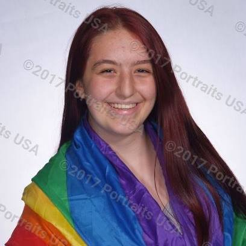
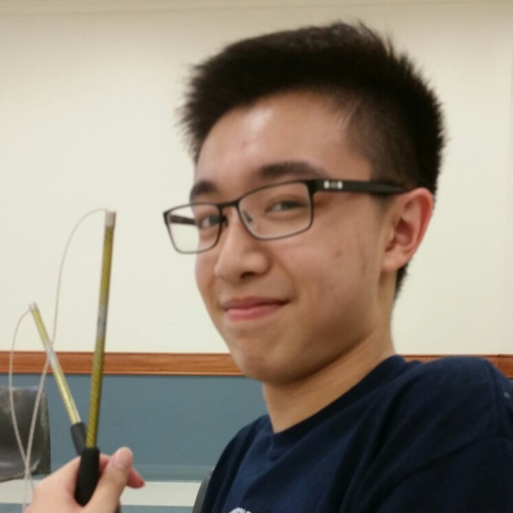
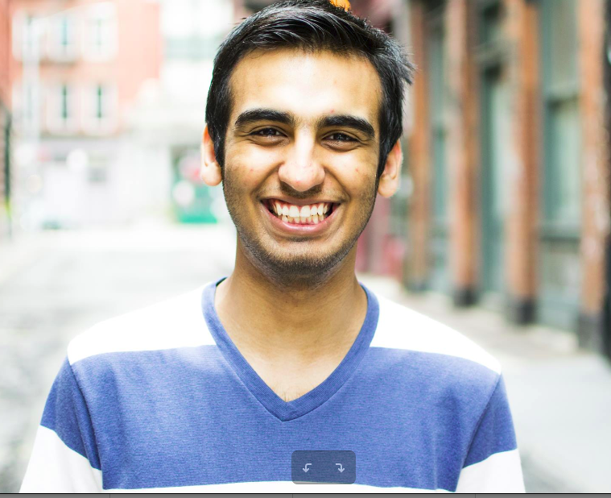
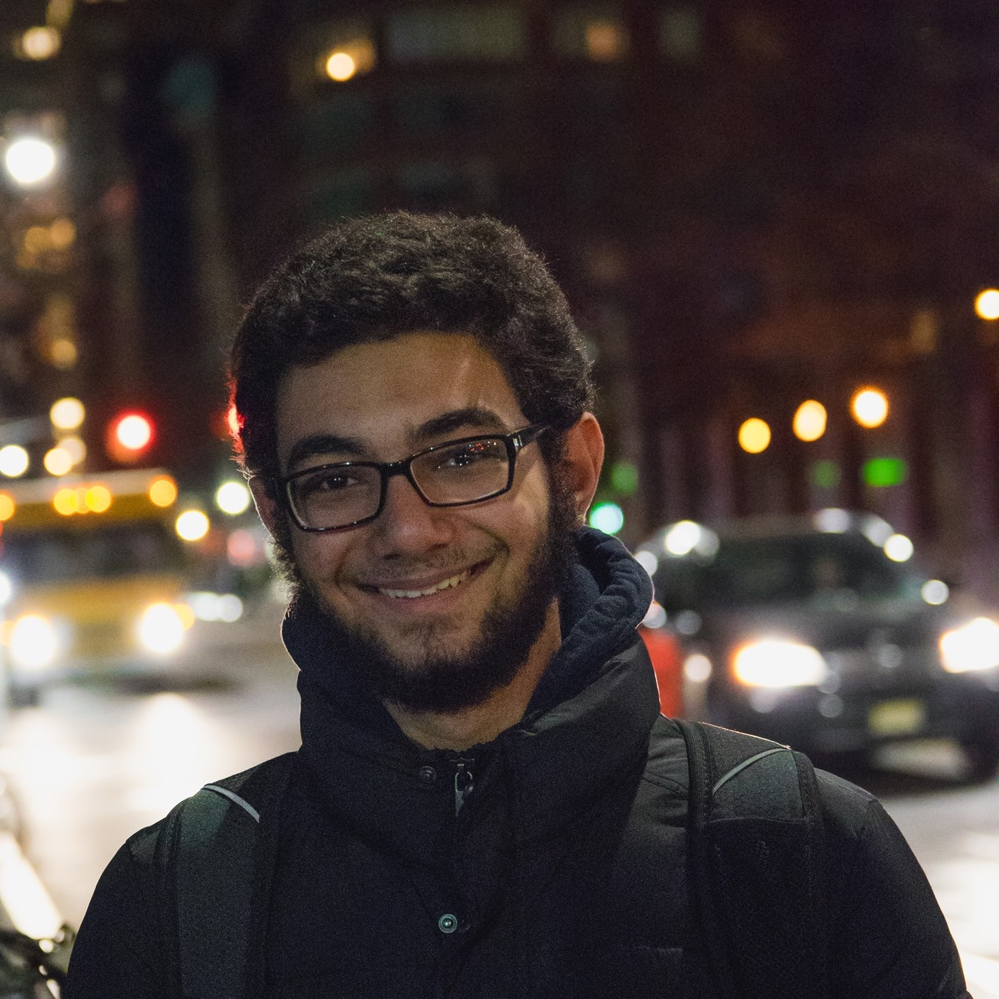

Welcome to Brain Battles! Our app aims to give its users a space to have fun while engaging in brain-stimulating exercises. Users may play a reaction time game, a word search, or Simon, a game that tests the player's memory. Users can connect with friends through our Team function, which allows groups of users to compare high scores and compete to be the top player in each game either across their team or worldwide.
Michela MarchiniProject Manager""Bop, bop, bop, bop to the top"" Michela Marchini is a senior at Stuyvesant High School and honored to have been project manager for this incredible final project. She enjoys food, netflix, and computer science. In her free time, Michela can be found stressing over merge erros and updating the devlog with work she did 3 days ago. |
Stanley LinJavascript Mastermind"QUOTE HERE" "With great power comes great responsibility" is a quote that Mansour strives to apply to many aspects of his life. Being a frontend developer is not one of those times. Fun Fact: The amount of hair on Mansour's face is inversely proportional to the sleep he gets. |
Khinshan KhanBackend Serversider"Enjoy taking innovative approaches at problems, because in those small detours, you may find something worthwhile." Khinshan "Shan" Khan is a student at Stuyvesant High School. Even though he sturggled to juggle between systems and softdev (because he's no clown!), he found it to be enlightening and enjoyed every second of it. When he's not coding, he likes to play video games, watch tv shows/ anime, read, and explore his city/ urbex (legally!). |
Mansour ElsharawyFrontend Peasant"CSS IS TOO A REAL LANGUAGE!!!" "With great power comes great responsibility" is a quote that Mansour strives to apply to many aspects of his life. Being a frontend developer is not one of those times. But deep down, he knows with enough aggressive CSS and facial hair, he can take over the world. |